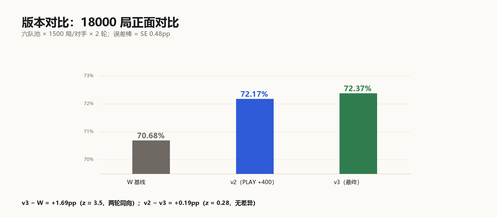

队伍：对对对队 ｜ 赛道：曲阜师范大学 PTCG-Arena ｜ 版本：v3（提交 id 622）
提交格式：Markdown ｜ 数据截至：B 榜 R94（提交时最新已结算轮）
这是什么游戏。 双方各带 60 张牌，场上最多 1 只出战宝可梦 + 5 只备战。每回合可以出牌、贴能量、进化、使用特性/支援者、攻击。先拿完 6 张奖赏卡（Prize）的一方获胜；场上没有宝可梦或牌库抽空也会输。ex 是强力宝可梦，被击倒时对方拿 2 张奖赏（Mega ex 3 张），所以「用非 ex 打 ex」在奖赏交换上天然吃亏，但也因此免疫「只针对 ex」的卡。
我们做了什么。 用 Hop's Trevenant（非 ex，140HP）做主攻，靠 Postwick / Hop's Choice Band / Hop's Snorlax 把 90 伤害的 Corner 堆到 180（被击倒后的 Horrifying Revenge 可到 220），再用 Mist Energy 挡效果伤害。60 张里没有一张是边角料：抽掉任意一块，对应体系胜率掉 2–6pp。
结果。 B 榜 58 轮 5409 分第 1；1566 局 82.2%。六体系里四个 ≥86%，草系 73.3%，Dragapult 44.0% 是唯一明显低于 70% 的对位。
一句话。 我们不是「最强牌组」，而是「在当前场况结构里最不容易输的牌组」；报告的后半部分用 20 次改动证明：再改也改不动了。
术语：pp = 百分点；z = 两比例差的标准化统计量（|z| ≥ 2 约等于 95% 置信）；ACE SPEC = 全牌组只能带 1 张的特殊卡；奖赏 = Prize card。
| 图 | 内容 | 位置 |
|---|---|---|
| 图 1 | 58 轮逐轮得分（满分/掉分分布） | 摘要之后 |
| 图 2 | 六体系场况占比 vs 我方胜率 | §4.1 之后 |
| 图 3 | 三个版本 18000 局对比 | §6.4 之后 |
不是「赢最多」，而是三段式的：
| 阶段 | 目标 | 判断标准 |
|---|---|---|
| 探索期 | 搞清引擎的动作语义 | 主力招式能稳定打出 |
| 巩固期 | 找到能吃到多数场况的牌组 | 加权胜率 > 80% |
| 收尾期 | 证明当前版本不可再改进 | 每个候选都能给出否定证据 |
| 类别 | 卡 | 张数 | 角色 |
|---|---|---|---|
| 攻击手 | Hop's Trevenant | 4 | 主攻，非 ex，140HP |
| 进化底 | Hop's Phantump | 4 | 稳定进化线 |
| 副攻 | Hop's Cramorant | 4 | 先手压制，120 伤害 / 110HP |
| 肉盾 | Hop's Snorlax | 2 | 备战区 +30 伤害，150HP |
| 能量 | Mist Energy | 4 | 防效果伤害（承重，见 §5.2） |
| 能量 | Telepath Psychic Energy | 4 | 主能量 |
| 竞技场 | Postwick | 4 | Hop's 招式 +30 伤害（承重） |
| 道具 | Hop's Choice Band | 4 | Hop's 招式 +30 伤害（不是 ×1.3） |
| 检索 | Hop's Bag / Poké Pad / Pokégear 3.0 | 4 / 4 / 2 | 稳定 T3 成型 |
| 检索 | Buddy-Buddy Poffin | 2 | 铺 70HP 以下基础宝可梦 |
| 回收 | Night Stretcher | 2 | 复活攻击手 |
| 切换 | Switch | 2 | 换出战位 |
| ACE | Treasure Tracker | 1 | 额外检索（限 1 张） |
| 支援者 | Lillie's Determination / Hilda | 4 / 4 | 补牌与检索进化 |
| 支援者 | Boss's Orders / Xerosic's Machinations / Lana's Aid | 2 / 2 / 1 | 定点击杀 / 削手 / 回收 |
Corner（稳定主招） = 90 基础 + 30 Postwick + 30 Choice Band + 30 Snorlax = 180
Horrifying Revenge = 30 基础（若上回合有 Hop's 宝可梦被击倒则 +100 = 130）
130 + 30 Postwick + 30 Choice Band + 30 Snorlax = 220（条件值）
180 / 220 意味着：
同样的「击杀一次」，我们付两拳的代价，对方付一拳。 这一条决定了 §5.1 的奖赏效率差。
修订说明：初版把「Corner 90」误写成「130 基础」，又把 Crustle 的 150HP 误写成 110HP；本版按 data/cards.csv 的卡面数值重算。
这副 60 张里没有一张是「可替换的边角料」。抽掉任意一块，对应体系的胜率会掉 2–6pp：
| 结构 | 抽掉/换掉的后果 | 统计量 |
|---|---|---|
| Mist Energy ×4 | Alakazam −5.53pp | z = −3.17 |
| Snorlax 两条硬规则 | Dragapult −5.84pp | z = −4.13 |
| ACE 位 Treasure Tracker | Dragapult −5.60pp | z = −3.54 |
| 搜索引擎 | Dragapult −4~−9pp | 多轮复测 |
| 能量 8 张 | −2.37 / −2.27pp | 两轮复测 |
| 支援者位 | −4.3 ~ −6.4pp | 多轮复测 |
| 值 | 动作 | 值 | 动作 |
|---|---|---|---|
| 7 | PLAY（从手牌出牌） | 12 | RETREAT（撤退） |
| 8 | ATTACH（贴能量） | 13 | ATTACK（攻击） |
| 9 | EVOLVE（进化） | 14 | END（结束回合） |
| 10 | ABILITY（使用特性） | 6 | 招式选择（select.type = 6） |
价值(动作) = 伤害收益 × w1
+ 奖赏进度 × w2
+ 场面存活 × w3
+ 检索/铺场 × w4
+ 招式选择加成（select.type=6 → 400）
其中「伤害收益」并非线性：击杀对方 ex（通常 2 奖赏，Mega ex 3 奖赏）的权重远高于普通击杀。
后期我们做过 6 组 agent 层实验（换人阈值、后备预充能、定向拉人、硬规则拉人、Mist 贴备战、Hand Trimmer 时机版），
全部为负或无效应（详见 §7.1）。结论：这套牌组的收益边界由牌组结构决定，agent 层已到平台期。
| 体系 | 场况占比 | 局数 | 我方胜率 | 胜负场 |
|---|---|---|---|---|
| Alakazam 系 | 26% | 406 | 86.5% | 351-55 |
| MegaLucario | 22% | 348 | 95.4% | 332-16 |
| 其它杂牌 | 15% | 232 | 98.7% | 229-3 |
| 草系（Ogerpon） | 15% | 232 | 73.3% | 170-62 |
| Dragapult | 15% | 232 | 44.0% | 102-130 |
| Crustle 墙 | 7% | 116 | 88.8% | 103-13 |
| 对位 | 结果 | 规则依据 |
|---|---|---|
| 我们 → Crustle 墙 | 103-13（88.8%） | 我们是非 ex 攻击手，打得动 150HP 的墙 |
| 墙 → Dragapult | 墙胜 | Mysterious Rock Inn：对手 ex 对它的攻击伤害全部无效 |
| Dragapult → 我们 | 102-130（44.0%） | Phantom Dive 200 一击秒掉我们 140HP |
所以「无解」更准确的表述是：在不牺牲 70% 场况的前提下无解，而不是卡池里绝对没有这些数值。
我们只用了三条官方规则作为约束：
1. 开局抽牌归一化（起手必然出现的卡）；
2. 同名卡 ≤ 4 张，ACE SPEC ≤ 1 张；
3. 至少 1 张基础宝可梦。
方法：每队每时代采集 ≥10 局（约 70 张起手样本）→ 统计每张卡的出现频次与回合 → 反推数量；
同名卡靠招式名反查（不同卡池的同名卡招式不同）。
效果：约 24 局日志 / 70 张起手样本可还原 58/60 张，单队约 10 秒；B 榜 28 队与 A 榜 38 队（去重后 38 支）全部完成，其中 6 支队伍在赛季中途换过阵。
行为节奏（每队 6 局抽样）：Dragapult 4.00 攻击/19.3 出牌、Alakazam 4.67/12.2、
MegaLucario 4.00/15.3、Crustle 3.50/8.0。
| 队伍 | 换阵内容 | 影响 |
|---|---|---|
| 老实写代码 | 毒系 → Dragapult（R67） | 与我们对位 56% → 44% 的下滑时间点完全吻合 |
| 谁是大明星 | MegaLucario → Alakazam | 我方胜率上升 |
| 山里灵活的狗 | Crustle → Crustle + Budew | 墙队更难打 |
| 狗熊岭 | MegaLucario → Hop's | 同系内战，胜率基本不变 |
| 食堂 | 加 Battle Cage ×3 + Xerosic | 我方道具被压 |
| 大狗队 | 加 Battle Cage + Enriching | 同上 |
| 对方 | 我方 | |
|---|---|---|
| 单次击杀所需 | 1 拳 | 2 拳 |
| 换得奖赏 | 1 | 2 |
| 每次击杀效率 | 1.0 奖赏/拳 | 0.5 奖赏/拳 |
| 每局平均奖赏 | T4 | T5 | T7 | T5→T7 增量 |
|---|---|---|---|---|
| 赢局 | 2.00 | 2.00 | 2.67 | +0.67 |
| 输局 | 1.40 | 0.88 | 0.88 | 0.00 |
| 对方 | 0.40 | 1.25 | 2.38 | +1.13 |
| 卡 | 效果 | 对我们的含义 |
|---|---|---|
| Crispin ×3–4 | 搜 2 张不同类型基本能量，1 张上手、1 张直接附着 | 每用一次净 +2 能量 → T5 稳定打出 Phantom Dive |
| Fezandipiti ex ×1–2 | 持有者的宝可梦被击倒后抽 3 张 | 我们每击杀一次，对方净 +3 张牌 |
| Unfair Stamp ×1（ACE） | 持有者的宝可梦被击倒后，双方手牌洗回重抽 | 顺手把我们攒的资源抹平 |
对手的 Powerful Hand 是「20 × 手牌数」（16 张 = 320，无上限）；
我方 220 是条件封顶值（Horrifying Revenge 触发时）。这解释了为什么同样打 21 局，我们的攻击次数多 70%，击倒数却更少。
| 体系 | 池内胜率 | 真实胜率 | 偏差 |
|---|---|---|---|
| Alakazam | 67% | 86.5% | −20pp |
| Crustle 墙 | 99.5% | 88.8% | +10.7pp（完全失真） |
| Dragapult | 50% | 44% | +6pp |
| 阶段 | 判据 | 翻车 |
|---|---|---|
| 初期 | 单次 360–1500 局，「看起来更好」 | 12 次假改进（如 52.16% → 复测 50.2%） |
| 中期 | 单次 z ≥ 2 | 3 次假阳性（含 z = 2.29 的活样本） |
| 最终 | 两次独立同向 + 每轮 ≥1.5pp + 合并 z ≥ 2，样本 ≥2500 | 至今无复现失败 |
| 样本 | 效应量 |
|---|---|
| 360 局 | +3.30pp |
| 2400 局 | +1.63pp |
| 9600 局 | +0.55pp |
| 18000 局 | 可分辨下限 ≈ 1.3pp |
| 版本 | 第一轮 | 第二轮 | 合计 |
|---|---|---|---|
| W 基线 | 6345/9000 = 70.50% | 6377/9000 = 70.86% | 12722/18000 = 70.68% |
| v2（PLAY +400） | 6495/9000 = 72.17% | — | 72.17% |
| v3（最终） | 6512/9000 = 72.36% | 6514/9000 = 72.38% | 13026/18000 = 72.37% |

图 3｜18000 局正面对比：W 70.68% / v2 72.17% / v3 72.37%；误差棒 SE 0.48pp。
v3 − W = +1.69pp（z≈3.5），v2 − v3 = +0.19pp（z=0.28，无差异）。
| # | 实验 | 层 | 样本 | 结果 | 判定 |
|---|---|---|---|---|---|
| 1 | 换人阈值 300→100 | agent | 2200 | −0.68pp | 否定 |
| 2 | 后备预充能 | agent | 3000 | −1.70pp | 否定 |
| 3 | 定向拉人（价值 980） | agent | 3000 | −0.50pp | 否定 |
| 4 | 硬规则拉人（99999） | agent | 2500 | −2.44pp | 否定 |
| 5 | 加 2 张能量（8→10） | 牌组 | 3000 | −2.37 / −2.27pp | 否定 |
| 6 | 叠伤害光环 | 牌组 | — | 成本否决（化石线/三段进化） | 否决 |
| 7 | Mist 贴备战区 | agent | 2500 | +0.16pp | 无效应 |
| 8 | 消融 Snorlax 两条硬规则 | agent | 2500 | −5.84pp（z=−4.13） | 否定（最强负效应） |
| 9 | ht2 削手（场况） | 牌组 | R85 | 78% vs 80% | 中性，回滚 |
| 10 | ht4（4 张 Hand Trimmer） | 牌组 | 2000 | −6.47pp（z=−3.55） | 否定 |
| 11 | ht2_xer4（+4 Xerosic） | 牌组 | 2000 | −7.35pp（z=−4.65） | 否定 |
| 12 | Hand Trimmer 时机版 | agent | 3500 | −0.19pp | 否定 |
| 13 | Neutralization Zone 换 ACE | 牌组 | 2000 | −2.05 / −3.25pp | 否定（ACE 限 1） |
| 14 | Night Stretcher ×3 换 ACE | 牌组 | 2000 | −5.60pp（z=−3.54） | 否定 |
| 15 | 第 3 张 Snorlax | 牌组 | 2500→3000 | +3.00（z=2.29）→ +0.03 | 假阳性 |
| 16 | Zacian 换血 | 牌组 | 600 | −23.25pp（z=−6.67） | 否定 |
| 17 | 体系迁移（Alakazam 克隆） | 体系 | 900 | −3.95pp | 否定 |
| 18 | nz 多张 | 牌组 | — | 非法（ACE ≤1） | 规则否决 |
| 19 | 削能 vs 墙 | 牌组 | 1200 | 池子饱和 99%，测不出 | 无法判定 |
| 20 | Mist 贴备战（Dragapult 线） | agent | 2500 | +0.16pp | 无效应 |
| 实验 | 初测 | 复测 | 教训 |
|---|---|---|---|
| xer4b | +6.17pp | 归零 | 局部样本噪声 |
| ht2 | +2.67pp | 机制验证失败（对手手牌 17.5→17.8、伤害 105.6→130.6 未降） | 机制没变就不算改进 |
| 第三张 Snorlax | +3.00pp（z=2.29） | +0.03pp | z ≥ 2 也可能骗人 |
| 控制 | 结果 | 排除的假设 |
|---|---|---|
| 换牌组（同 pilot 换另一套） | 4.7% → 6.7% | 不是某一副牌的问题 |
| 移除对手 2 张 Xerosic | 4.7% → 5.3% | 不是手牌被削导致 |
| 同一 pilot 打水系 | 58% | pilot 本身可用 |
| 逐局解剖 21 场 | 全部数值差，无一次决策失误 | 不是操作问题 |
| 局限 | 具体 | 实证来源 |
|---|---|---|
| Dragapult 对位 | 232 局 44.0%；在「不牺牲 Crustle 对位」的非 ex 约束下无解（无 200+HP 非 ex；320 单拳需换 ex） | 232 局逐动作归档 + Zacian 实验 |
| 本地池保真 | 6 体系仅 2 个达标；预测单个对手最大偏差 37pp（不说对不队） | 六体系池校准 + 池 vs 真实 |
| 测量精度 | 1600 局 ±3pp，1–2pp 的改进测不出 | 分样本量收敛实验 |
| 牌组空间 | v2 与 v3 差 0.19pp（z=0.28），已是平台期 | 18000 局对比 |
| 场况实验窗口 | R77 起赛事放缓，每候选需 2 轮 | 逐轮时间戳 |
| 外部环境 | 38 队里 6 支换阵，Dragapult 家族 2→4 支 | 换阵台账 |
| 维度 | 评审会看什么 | 本报告给的证据 | 一句话 |
|---|---|---|---|
| 稳定性 30% | 不是一轮爆发，而是长期不掉分 | 58 轮 5409 分；17 轮满分；46 轮 ≥90；最差 R53=70，下一轮 97；分段均分 96.9 / 91.5 / 92.2 | 只有一轮明显掉分，且立刻修复 |
| 独创性 30% | 是否只有「抄一套强牌」 | 非 ex 攻击手；规则闭环解释；38 队牌组逆向；否定实验协议；本地池偏差校准 | 用规则解释排名，而不是只报结果 |
| 排名 40% | B 榜最终名次 | 截至 R94 第 1，5409 分，领先第 2 名 194 分 | 名次是结果，不是论证的全部 |
| 项 | 值 |
|---|---|
| B 榜 | 58 轮 · 5409 分 · 第 1（领先 194）· 1286-277-3 · 82.2%（1566 局）· 均分 93.3 |
| B 榜分段均分 | R37–R52 = 96.9（满分 6/掉分 0）· R53–R72 = 91.5（5/2）· R73–R94 = 92.2（6/0） |
| 满分轮 | 17 轮（29%）· 最差 R53 = 70（下一轮 97） |
| A 榜 | 34 轮 · 3008 分 · 第 2（与格鲁同分）· 768-186-24 |
| 版本 | v3（submission 622）· 18000 局 72.37% |
# 0) 只读：校验最终牌组（不需要账号） python scripts/deck_check.py submission/deck.csv data/cards.csv # 1) 需要平台账号；凭据只放环境变量，不要写进仓库 export PTCG_USER=... export PTCG_PASS=... python scripts/monitor.py # 2) 对手牌组逆向（输出 data/recon/opponents_decks.json） python scripts/recon_all.py # 3) 单轮快速对比 / 场况分段验证 python scripts/fast_round_check.py 94 python scripts/upload_segment_check.py --since 77 # 4) 本地六队池 18000 局（需要 eval/ 与 vendor/，未随报告仓库发布） # 这是报告 §6.4 的数据来源；仓库只保留结果，不把 2GB 训练/陪练目录放上来。
说明：scripts/deck_check.py只依赖data/cards.csv，可以在没有平台账号的情况下复现牌组合法性。
fast_round_check.py --versions 不是本仓库提供的接口；初版附录写错了，已删除。| 文件 | 内容 |
|---|---|
data/rounds.json | 58 轮逐轮得分 |
data/final_stats.json | B/A 榜汇总 |
data/final_arche.json | 六体系占比/胜率/胜负场 |
data/opponents_decks.json | 38 队牌组还原 |
data/behaviour.json | 六体系行为节奏 |
data/实验台账20次.csv | 20 次实验结构化台账 |
data/cards.csv | 卡池 1267 张（id / 名称 / HP / 招式 / 效果文本） |
data/leaderboard_b_r94.csv | B 榜 28 队 R94 快照 |
data/leaderboard_a_r36.csv | A 榜 38 队快照 |
data/team_submissions.csv | 本队 28 次提交记录（含 622） |
submission/main.py | v3 agent（标准库，无外部依赖） |
submission/deck.csv | 最终 60 张牌组（逐行 cardId） |
submission/deck.md | 逐张牌的角色说明 |
docs/RULES_AND_SCORING.md | 官方赛制 / 积分 / 组牌 / 评分口径 |
docs/OPPONENTS_FULL_RE.md | 38 队逆向 + 换阵台账 + 实验全过程（约 61KB） |
docs/POOL_REPLICATION.md | 本地池复刻保真度研究 |
| # | 初版 | 本版 | 影响 |
|---|---|---|---|
| 1 | 每轮 8 局、按胜场积分 | 单循环 27 局/轮、按名次 100→10 积分 | 规则描述 |
| 2 | 牌组表 56 张、Pokégear 4 | 按 submission/deck.csv 重列 60 张 | 牌组表 |
| 3 | Corner 130 基础 / Crustle 110HP | Corner 90→180；Horrifying Revenge 220 为条件值；Crustle 150HP | 伤害模型 |
| 4 | v3 vs v2 写 z≈3.5 | v3 vs v2 z=0.28；z≈3.5 是 v3 vs W | 统计表述 |
| 5 | 「20 次有统计功效」 | 「20 次改动，13 项可判定否定」 | 措辞 |
| 6 | 「卡池绝对无解」 | 「非 ex 约束下无解」；Zacian/Cape 的代价写清 | 结论边界 |